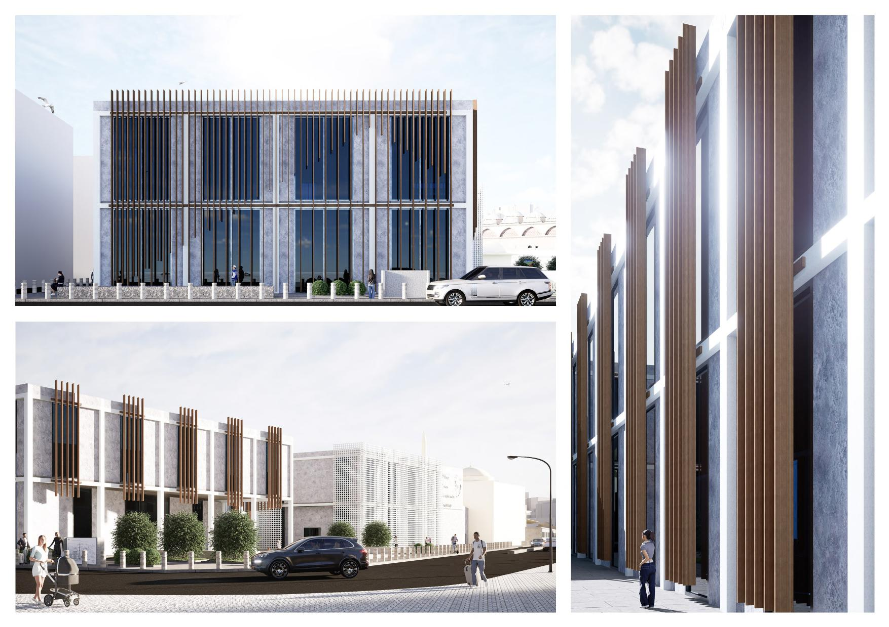

Architect — Istanbul / Baku — 2025
Cavid
Balayev
Baku-born, Istanbul-based architect working across computational and parametric design, architectural visualisation and site supervision — from cultural landmarks to social housing.

Tophane · İstanbul